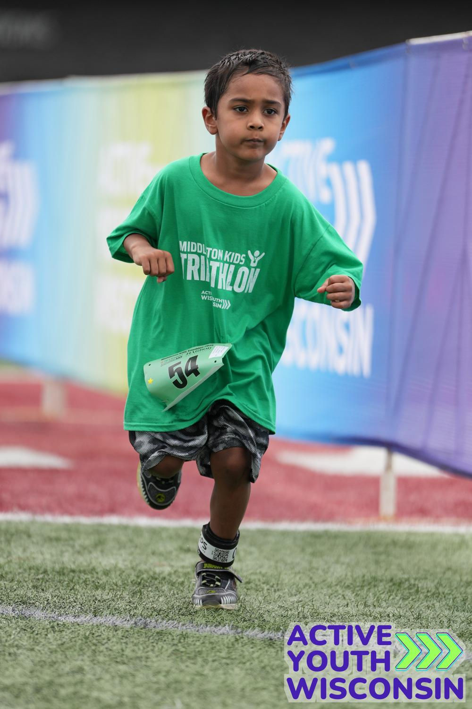
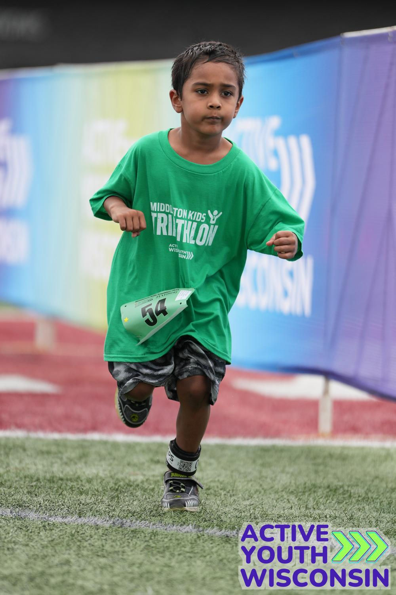
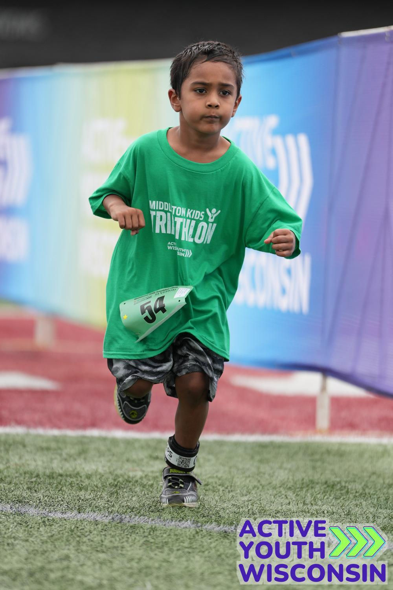

Sanjeev Lakshman
Young Chess Player | Triathlete | Soccer Enthusiast

Young Chess Player | Triathlete | Soccer Enthusiast
Sanjeev is a dedicated young athlete who excels both mentally and physically. With a strong passion for chess, endurance sports, and team play, he consistently demonstrates discipline, focus, and a love for learning.
His long-term goals are to become a Grandmaster in chess and a Veterinary Doctor, combining his analytical thinking, discipline, and compassion to excel both on the chessboard and in caring for animals.
Sanjeev is an accomplished young chess player with a growing record of competitive success. He actively competes in rated chess tournaments and continues to improve his skills through structured training and consistent practice. Currently rated 180, he aspires to achieve the title of Grandmaster.
Sanjeev aspires to become a Grandmaster and actively works on advanced training, tournament preparation, and skill development to achieve this goal.
Sanjeev has successfully completed Kumon Level 4A and shows a strong interest in learning and understanding mathematics. He approaches math with curiosity and a positive attitude.
Alongside chess, Sanjeev trains for triathlons, building endurance through swimming, cycling, and running. This balance of physical fitness and mental strength plays a key role in his overall development.
Sanjeev also enjoys playing soccer, where he learns teamwork, strategy, and quick decision-making on the field.
He has scored goals in almost all the games and defended well when opponents try to score.